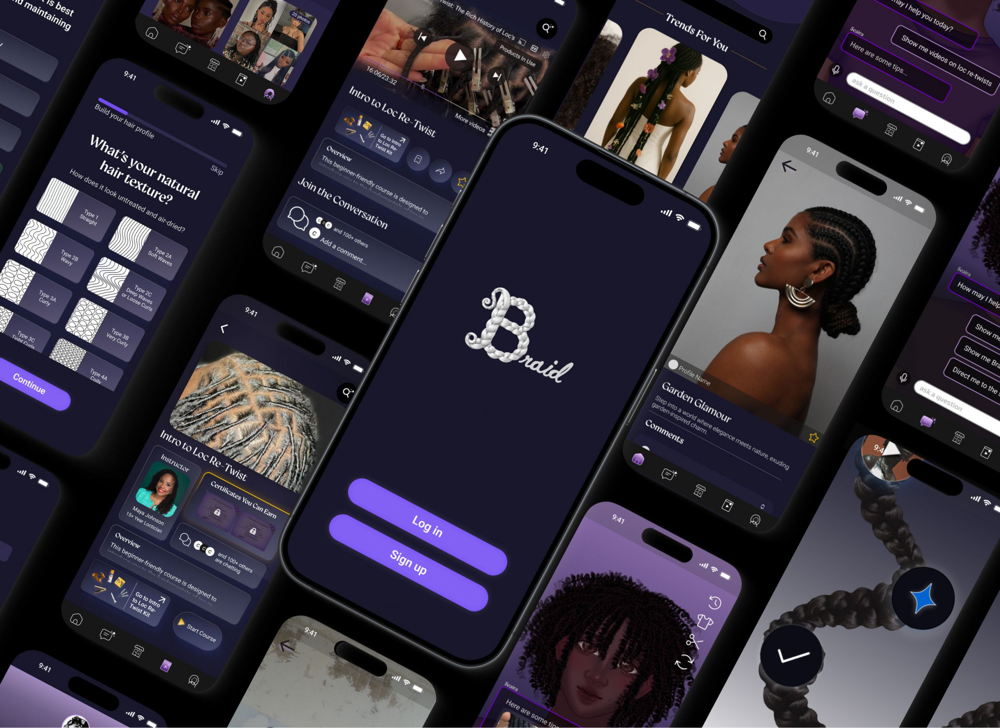

Work
All projects.
Every case study in one place: product, spatial and assistive design, sculpture and 3D worlds.
Project 808
Chicago trains world-class creatives, then loses them. This campaign site builds the case to keep them here.
Sun-Drop Flower
Assistive lighting that is also art. A robotic lamp I built for my mom's arthritis that turns on with a wave of the hand, no switch needed.
Braid
Led UX/UI design for a mobile education platform centered on textured hair care, owning product structure and visual systems from concept through MVP.

Where We Rest
A miniature garden I built in memory of my father and my brother, now a life-size 3D world you can walk through.
The Columbia Chronicle
Designed and prototyped the first mobile app experience for a legacy student news organization, establishing core user flows and information architecture.